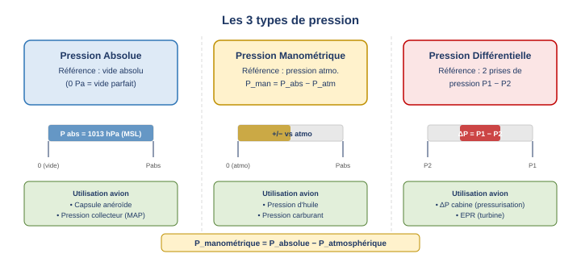
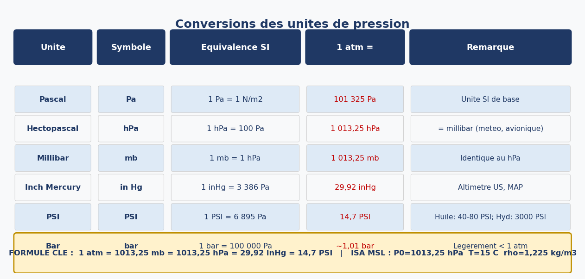
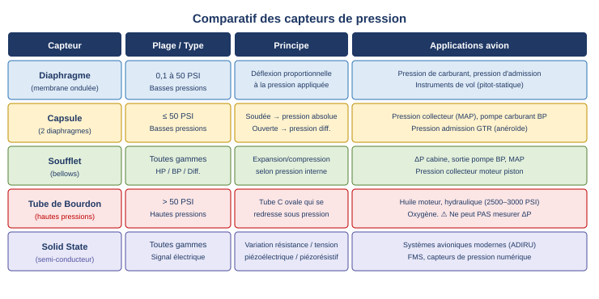
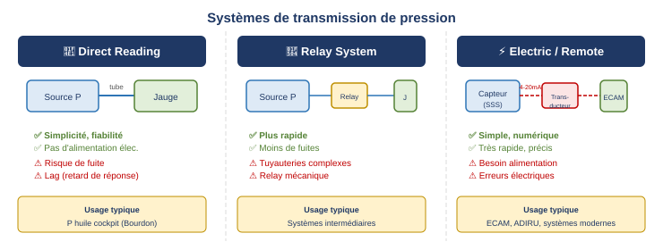

1. Introduction — Pourquoi mesurer la pression ?
La mesure de pression est omniprésente en aviation. Elle sert à deux grandes familles d'usages : la surveillance des systèmes moteur et avion d'une part, et les instruments de vol d'autre part.
Côté systèmes, la pression est mesurée pour :
- la pression d'huile (lubrification moteur) ;
- la pression carburant (alimentation moteur) ;
- la pression de collecteur (MAP — moteurs à pistons) ;
- la poussée moteur (EPR — Engine Pressure Ratio sur turbines) ;
- la pression hydraulique (train d'atterrissage, freins, gouvernes).
2. Définitions fondamentales
La pression est définie comme une force exercée perpendiculairement sur une unité de surface : P = F / A. Elle s'exprime en N/m² (pascal).
2.1 Pression absolue
La pression absolue est mesurée en prenant pour référence le vide parfait (pression nulle absolue). Elle est toujours positive. C'est la pression "réelle" d'un point de vue physique, indépendante de toute pression ambiante. L'altimètre est calé en pression absolue lorsqu'il affiche QFE (pression au sol).
2.2 Pression manométrique (gauge pressure)
La pression manométrique est référencée par rapport à la pression atmosphérique ambiante. Elle peut être positive ou négative. La relation est simple :
Avec P_abs = pression absolue, P_atm = pression atmosphérique locale. Si P_man = 0, la pression mesurée est égale à la pression atmosphérique.
2.3 Pression différentielle
La pression différentielle est la différence de pression entre deux points d'un circuit ou d'une installation. Elle ne nécessite aucune référence absolue ou atmosphérique.

3. Unités de pression
Plusieurs unités coexistent en aviation selon les pays, les instruments et les systèmes. Il est indispensable de maîtriser leurs conversions.
3.1 Les unités principales
Le Pascal (Pa) est l'unité SI de base : 1 Pa = 1 N/m². Il est peu utilisé directement en aviation ; on lui préfère le hectopascal (hPa) (1 hPa = 100 Pa), identique au millibar (mb), et employé universellement pour les calages altimètre et les bulletins météo.
L'inch of mercury (in Hg) est la référence de l'altimétrie nord-américaine et de la pression collecteur (MAP). À 0 °C, 1 in Hg vaut environ 3 386 Pa.
Le PSI (pounds per square inch) est utilisé pour les pressions élevées : huile, hydraulique, oxygène. 1 PSI = 6 895 Pa ≈ 0,07 bar. Un ordre de grandeur utile : 3 000 PSI ≈ 200 bar (pression hydraulique d'un gros porteur).

ISA au niveau de la mer : P₀ = 1 013,25 hPa · T = 15 °C · ρ = 1,225 kg/m³ · Gradient thermique : 2 °C/1 000 ft (6,5 °C/1 000 m) · Gradient barique (Z=0) : 28 ft/hPa ou 6,5 m/hPa.
3.2 Le Bar
Le bar est utilisé dans certains systèmes industriels. 1 bar = 100 000 Pa = 1 000 hPa, soit légèrement moins qu'une atmosphère standard (1 013,25 hPa). Exemple de conversion : 20 000 Pa = 0,2 bar.
4. Types de capteurs de pression
Cinq familles de capteurs permettent de transformer une pression en signal mécanique ou électrique. Elles se distinguent essentiellement par leur plage de mesure et leur principe de fonctionnement.

4.1 Le diaphragme
Le diaphragme est un disque métallique circulaire et ondulé (corrugated) qui se défléchit proportionnellement à la pression appliquée. Cette déflexion est transmise mécaniquement à un pointeur ou convertie en signal électrique. Le diaphragme est réservé aux basses pressions (0,1 à 50 PSI). Sa construction simple le rend fiable et peu coûteux.
4.2 La capsule (aneroid capsule)
La capsule est formée de deux diaphragmes soudés face à face. Elle existe sous deux variantes :
- Capsule anéroïde : le volume interne est scellé sous vide. Elle mesure donc une pression absolue (elle se dilate quand la pression externe diminue, comme dans un altimètre). Applications : pompe carburant basse pression, pression d'admission GTR.
- Capsule différentielle : l'une des faces est exposée à une pression de référence. Elle mesure une pression différentielle.
La capsule est utilisée pour les pressions inférieures à 50 PSI, notamment pour la pression collecteur (MAP).
4.3 Le soufflet (bellows)
Le soufflet est un cylindre métallique à parois plissées qui peut se comprimer ou s'allonger sous l'effet de la pression. Contrairement aux diaphragmes et capsules, il peut être utilisé pour les pressions hautes, basses et différentielles. C'est le seul capteur mécanique véritablement polyvalent en termes de gamme. Applications typiques : sortie de pompe BP, jauge de pression différentielle cabine, pression collecteur moteur à pistons.
4.4 Le tube de Bourdon
Le tube de Bourdon est un tube métallique de section ovale enroulé en arc de cercle (forme en C). Lorsque la pression intérieure augmente, le tube tend à se redresser, entraînant un mécanisme à pignon et crémaillère qui déplace une aiguille. Il est conçu pour les hautes pressions : huile moteur, pression hydraulique cockpit, oxygène.
4.5 Les capteurs à état solide (Solid State Sensors)
Les capteurs à état solide (SSS) exploitent les propriétés électriques de certains matériaux semi-conducteurs : leur résistance ou leur tension de sortie varie lorsque la pression change. Les technologies les plus communes sont le piézoélectrique, le piézorésistif et les puces à semiconducteur.
Ces capteurs sont au cœur des avioniques modernes (ADIRU, FMS) car ils sont compacts, très précis, numériques, et couvrent toutes les gammes de pression. Leur signal électrique se prête parfaitement à la transmission à distance et à l'acquisition par les calculateurs.
5. Instruments de pression avion
5.1 Pression d'huile moteur
La lubrification est essentielle à la santé d'un moteur. La pression d'huile est captée à la sortie de la pompe d'huile. Un indicateur de pression d'huile anormalement basse ou absente est une alerte critique impliquant une procédure d'urgence immédiate.
Pour les jauges analogiques, on utilise un tube de Bourdon. Les valeurs nominales diffèrent selon le type de motorisation :
5.2 Pression carburant
La pression carburant est mesurée à l'aide d'un soufflet (bellows), adapté aux pressions faibles à modérées. La valeur typique est de 20 à 25 PSI. La jauge indique la pression de carburant dosé (metered fuel pressure).
5.3 Pression de collecteur — MAP (moteur à pistons)
La pression de collecteur (Manifold Absolute Pressure) est mesurée dans la tubulure d'admission à proximité des soupapes d'entrée. C'est une pression absolue, exprimée en inches of Mercury (in Hg). Elle est mesurée par un soufflet anéroïde différentiel.
Ses indications varient selon :
- le régime moteur (plus le régime est élevé, plus la MAP est élevée sur un moteur atmosphérique) ;
- l'altitude (la MAP diminue avec l'altitude sur un moteur atmosphérique) ;
- le pas d'hélice (un pas plus fin absorbe plus de puissance et crée plus de dépression).
5.4 Pression hydraulique
Les circuits hydrauliques des avions de ligne fonctionnent sous de très hautes pressions (2 500 à 3 000 PSI). La jauge de cockpit utilise un tube de Bourdon pour les systèmes à lecture directe, ou un transducteur électrique qui reçoit le signal d'un capteur de pression distant et l'affiche sur l'ECAM/EICAS.
5.5 Engine Pressure Ratio (EPR)
L'EPR est un paramètre moteur spécifique aux turboréacteurs. Il représente le rapport entre la pression totale en sortie de tuyère et la pression totale à l'entrée du moteur (entrée de soufflante). C'est un indicateur de poussée utilisé sur certains appareils (Airbus A300/A310, Airbus A320 avec CFM56, etc.) en lieu et place du N1.
P_t7 = pression totale sortie tuyère · P_t2 = pression totale entrée moteur. Valeur de ralenti ≈ 1,00 · TOGA ≈ 1,5–1,6.
5.6 Modes de transmission
Les instruments de pression utilisent trois modes de transmission entre le capteur et l'indicateur cockpit :

La lecture directe consiste à relier physiquement le capteur à l'instrument par une canalisation. Simple et fiable, elle ne nécessite aucune alimentation électrique, mais présente un risque de fuite et un léger retard d'indication (lag time). C'est le principe d'un tube de Bourdon relié directement à la ligne d'huile.
Le système à relais interpose un relais mécanique entre le capteur et l'indicateur. Il réduit les fuites et améliore la réactivité, au prix d'une complexité accrue en tuyauterie.
La transmission électrique (ou indication à distance) exploite un transducteur qui convertit la pression en signal électrique (courant 4–20 mA ou signal numérique). L'indicateur reçoit ce signal et affiche la pression sans aucune liaison physique en pression. C'est le mode utilisé dans les cockpits modernes (ECAM, EICAS) : minimal en fuites, très rapide, compatible avec les systèmes numériques. L'inconvénient est la dépendance à l'alimentation électrique et les risques d'erreurs électroniques.
| Mode | Avantages | Inconvénients |
|---|---|---|
| Direct | Simplicité, fiabilité, pas d'électricité | Fuite possible, retard de réponse |
| Relais | Plus rapide, moins de fuites | Tuyauteries, relais mécanique |
| Électrique | Simple, numérique, très rapide, peu de fuites | Besoin alimentation, erreurs électriques |
6. Pannes et conséquences
Les défaillances des instruments de pression se classent en deux catégories : la perte de la mesure et les indications incorrectes.
6.1 Types de pannes
Une perte de mesure de pression peut résulter d'un capteur défaillant, d'un bouchon dans une canalisation, ou d'un fil électrique rompu. La conséquence directe est la disparition de la surveillance : le pilote ne sait plus si la pression est dans la plage normale.
Des indications incorrectes peuvent provenir d'une fuite dans la ligne (la pression indiquée baisse artificiellement), d'un capteur dérivé (indication erronée mais stable), ou d'un transducteur défaillant (indication figée ou aléatoire).
6.2 Conséquences opérationnelles
Sans surveillance de pression, les risques sont sérieux :
- Pression d'huile : perte de lubrification → saisissement moteur ;
- Pression hydraulique : perte des gouvernes, du train, des freins ;
- Pression carburant : extinction moteur par manque de débit ;
- MAP : surpuissance ou sous-puissance non détectée → endommagement moteur ou performances insuffisantes au décollage.
Une défaillance d'instrument de pression peut conduire à une utilisation inappropriée du système, à des dommages graves sur le circuit concerné, voire à un déroutement de l'aéronef.